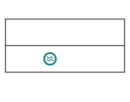
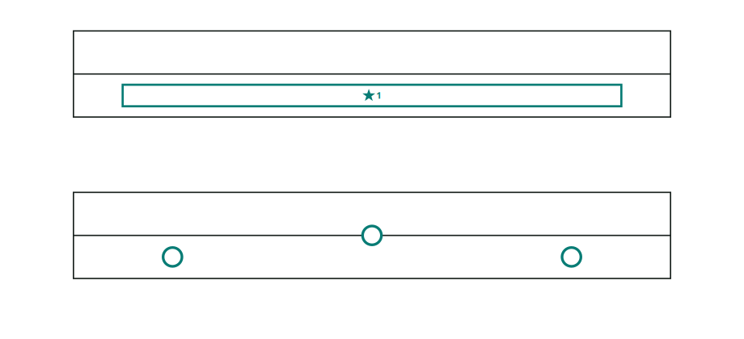
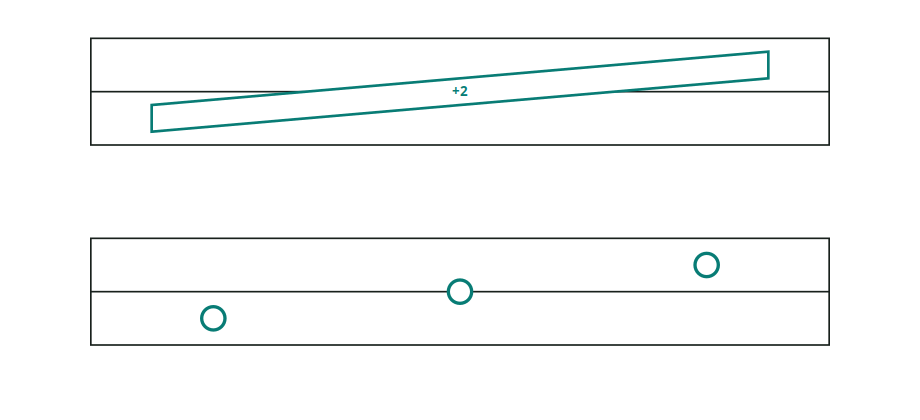
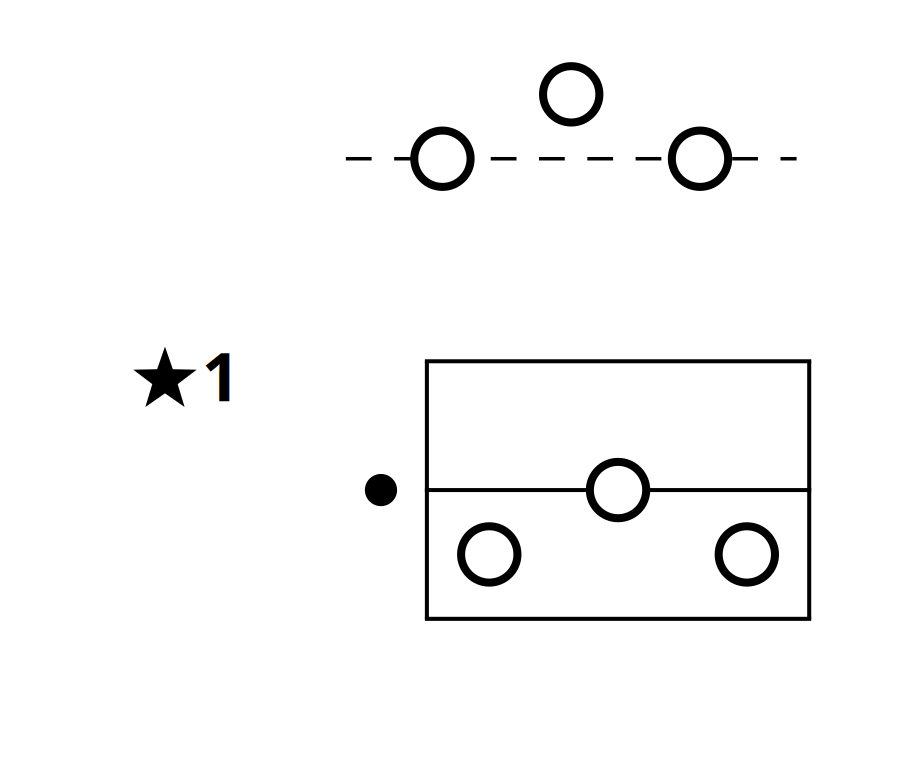

Read ornaments, tuplets, and trills
A single written note can ask for a repeating neighbor or a short pattern of notes.
Rule: A zigzag means alternate between two pitches. A square-ended note stands for several notes within one written span.
Trills: two pitches back and forth
Start on the note's written pitch, then alternate with a nearby pitch for its written length. One zigzag means one semitone away; two stacked zigzags mean two semitones. The zigzag's direction shows whether the other pitch is above or below.

Down 2 semitonesTwo falling zigzags.Think about it: A note at C has one upward zigzag. Which two pitches alternate? What if it has two downward zigzags?
Show the answer
One upward zigzag alternates C and C♯. Two downward zigzags alternate C and B♭.
Ornaments: a stored pattern
An ornament replaces one written note with a short sequence. Its square-ended body keeps the note's written span. A filled star and number refer to the pattern marked with the same star and number in the appendix.

The motif's rhythm is fitted into the ornament's written span. Its pitches move with the marked note: the first motif note becomes the marked pitch, and the others keep their distances from it. An ornament stays within two semitones above or below that pitch.
Tuplets: several notes in one span
A tuplet also compresses a group of notes into one written span. Unlike an ornament, its pitches can range farther from the first note, and it can finish on a different pitch. When the first and last pitches differ, the square-ended body slopes between them.

A tuplet with a star uses a pattern from the appendix instead of an offset written inside the body. The star and number match the appendix entry, just as they do for an ornament. Its first note starts at the written pitch; the remaining notes keep their intervals, while the whole pattern fits the written span.
Two ways to read the appendix
The same numbered pattern can appear in two formats when it is used both as an ornament and as a tuplet. Read the upper panel relative to the marked note; read the lower panel at the pattern's original pitches.

Find the matching star and number in the appendix to learn the pattern's notes and rhythm. The square-ended note shows where it starts and the total time it occupies; the appropriate appendix panel tells you how to read its pitches.